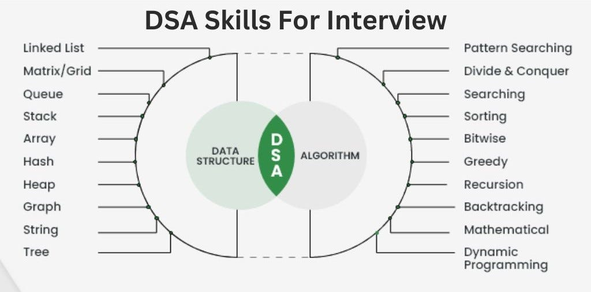

Introduction to Data Structures and Algorithms
Data Structures and Algorithms (DSA) refer to the study of methods for organizing and storing data and the design of procedures (algorithms) for solving problems, which operate on these data structures. DSA is one of the most important skills that every computer science student must have. It is often seen that people with good knowledge of these technologies are better programmers than others and thus, crack the interviews of almost every tech giant, including companies like Google, Microsoft, Amazon, and Facebook (now Meta). This DSA tutorial aims to help you learn Data Structures and Algorithms (DSA) quickly and easily.
Why to Learn DSA?
- Learning DSA boosts your problem-solving abilities and make you a stronger programmer.
- DSA is foundation for almost every software like GPS, Search Engines, AI ChatBots, Gaming Apps, Databases, Web Applications, etc
- Top Companies like Google, Microsoft, Amazon, Apple, Meta and many other heavily focus on DSA in interviews.
How to learn DSA?
- Learn at-least one programming language (C++, Java, Python or JavaScript) and build your basic logic.
- Learn about Time and Space complexities
- Learn Data Structures (Arrays, Linked List, etc) and Algorithms (Searching, Sorting, etc).
- Once you learn main topics, it is important to solve coding problems against some predefined test cases.
- Solve problems daily using coding platforms like GfG, leetcode, codeforces, codechef
